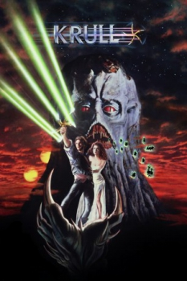

Country:United Kingdom, 121 minutes
Spoken languages:English
Genres:Action, Adventure, Fantasy, Sci-Fi
Director(s):Peter Yates
Writer(s):Stanford Sherman
Video Codec:Unknown
Number: 2843


Certification:PG
Storyline:
A prince and a fellowship of companions set out to rescue his bride from a fortress of alien invaders who have arrived on their home planet.
Cast:
Medium: Bluray,
Loaned: No
Aspect ratio: Unknown